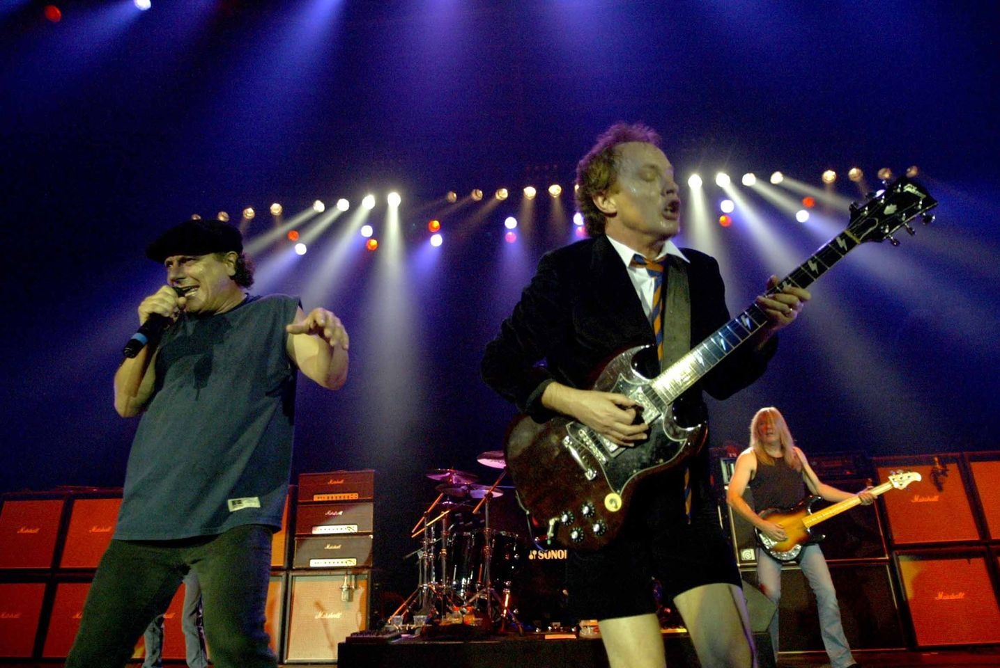
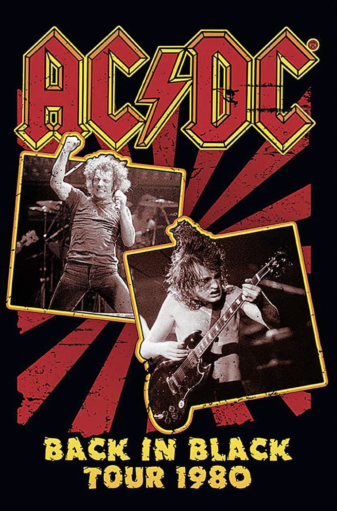

Австралийская рок-легенда
Логотип группы AC/DC
AC/DC — австралийская рок-группа, сформированная в Сиднее в 1973 году братьями Малькольмом и Ангусом Янгами.
Группа считается пионерами хард-рока и хэви-метала.
"AC/DC — одна из величайших рок-групп всех времен" — Rolling Stone
История группы
Ранние годы (1973-1977)
Группа была основана в 1973 году братьями Малькольмом и Ангусом Янгами.
Название AC/DC было предложено сестрой братьев после того, как она увидела аббревиатуру на швейной машинке.
Первый концерт группа дала в сиднейском баре Chequers в канун Нового 1973 года.
Международный успех (1977-1980)
Прорывным стал альбом Highway to Hell (1979), который принес группе мировую известность.
Трагическая смерть вокалиста Бона Скотта в феврале 1980 года могла стать концом группы, но они нашли нового вокалиста — Брайана Джонсона.
Back in Black и дальнейший успех (1980-настоящее время)
Альбом Back in Black (1980) стал одним из самых продаваемых альбомов в истории музыки.
Группа продолжает выступать и записывать музыку по сей день, несмотря на потери участников и изменения в составе.
Участники группы
Текущий состав группы
| Имя | Роль | Период участия |
| Ангус Янг | Соло-гитара | 1973-настоящее время |
| Стивен Янг | Ритм-гитара | 2014-настоящее время |
| Брайан Джонсон | Вокал | 1980-настоящее время |
| Клифф Уильямс | Бас-гитара | 1977-настоящее время |
| Фил Радд | Ударные | 1975-1983, 1994-2015, 2018-настоящее время |
| * Состав может меняться | ||
Бывшие участники
- Бон Скотт (вокал, 1974-1980) (скончался)
- Малькольм Янг (ритм-гитара, 1973-2014) (скончался)
- Марк Эванс (бас-гитара, 1975-1977)
- Саймон Райт (ударные, 1983-1989)
Дискография
-
High Voltage (1975)
Первый международный альбом группы, содержащий лучшие треки с двух австралийских релизов.
- It's a Long Way to the Top (If You Wanna Rock 'n' Roll)
- T.N.T.
- High Voltage
-
Highway to Hell (1979)
Последний альбом с Боном Скоттом, принесший группе международную известность.
-
Back in Black (1980)
Один из самых продаваемых альбомов в истории музыки, записанный с новым вокалистом Брайаном Джонсоном.
-
For Those About to Rock (We Salute You) (1981)
Первый альбом AC/DC, достигший первого места в чарте Billboard 200.
Самые известные песни
Highway to Hell (предпросмотр)
Галерея
Видео
Back in Black (видеоклип)
Свяжитесь с нами
Контакты
Официальный фан-клуб AC/DC
Email: fanclub@acdc.com
Веб-сайт: acdc.com
Карта концертов
Интересные факты
Ангус Янг всегда выступает в школьной форме, которую носил в реальной школе.
Группа продала более 200 миллионов альбомов по всему миру.
Ближайшие концерты
- 15 октября 2023 - Лондон, Великобритания
- 2 ноября 2023 - Нью-Йорк, США
- 20 ноября 2023 - Сидней, Австралия